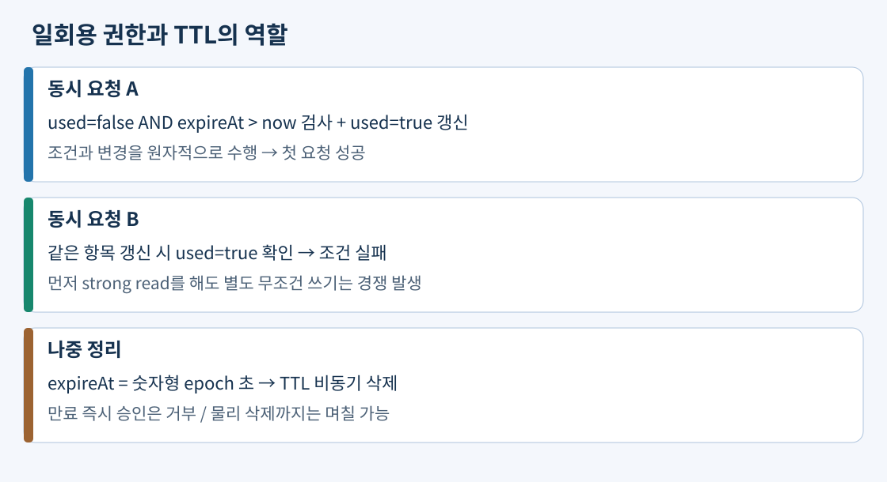
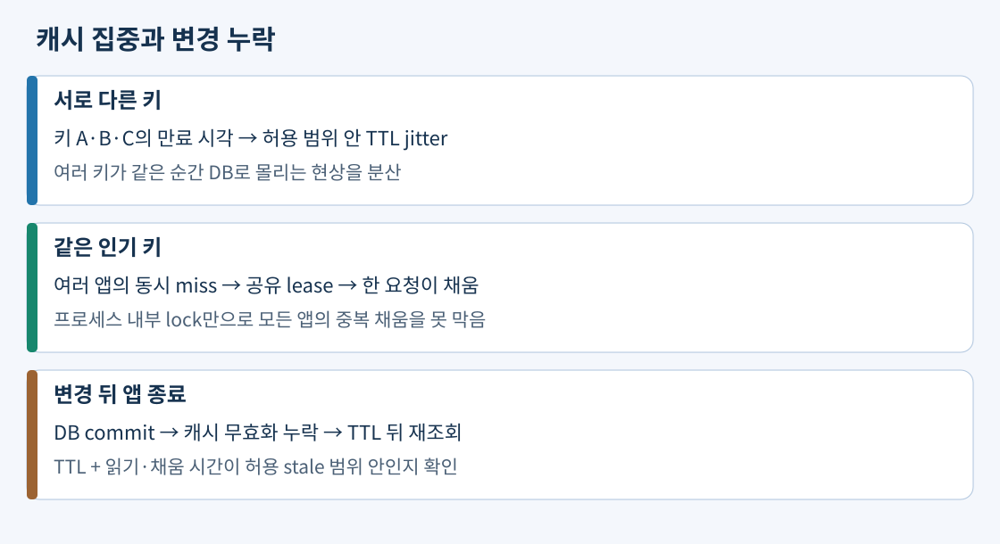

DynamoDB 기본 키는 항목을 유일하게 식별한다. PK가 고객 ID이고 SK가 주문시각#주문ID이면 Query에 고객 PK의 동등 조건을 지정하고 SK의 범위·접두 조건으로 최근 주문을 찾는다. GetItem은 완전한 기본 키로 한 항목을 읽는다. Query의 FilterExpression은 읽은 뒤 걸러내므로 반환 건수가 적어도 소비 용량을 줄이지 못한다. Scan은 넓은 데이터를 읽으므로 운영 화면을 매번 전체 Scan으로 구현하기 전에 필요한 키 조회를 설계한다.
실제 구성 예: 고객 주문 목록은 기본 키, 같은 고객의 금액순 조회는 같은 PK와 금액 SK를 둔 LSI, 배송 상태별 목록은 상태#분산구간 PK와 주문시각 SK의 GSI를 사용한다. LSI는 테이블 생성 시 정의하고 strong read가 가능하다. GSI는 생성 후 추가할 수 있지만 eventual read만 가능하다. 배송 상태처럼 값 종류가 적은 키는 GSI에서도 쏠리므로 상태별 분산과 여러 Query 결과 병합을 함께 설계한다.
쓰기를 성공시킨 뒤 GSI 목록에서 바로 안 보이면 아직 인덱스 반영 중일 수 있다. 주문 완료 화면은 기본 키 GetItem의 strong read로 확인하고 목록에는 지연을 허용할 수 있다. 인덱스 용량을 늘려도 일관성 모델은 바뀌지 않는다.
조건부 쓰기는 현재 항목의 조건 검사와 변경을 한 원자적 연산으로 묶는다. 강력한 읽기를 먼저 해도 뒤따르는 조건 없는 쓰기까지 하나의 원자적 작업이 되지는 않는다. 두 구매자가 재고 1을 함께 읽은 뒤 각각 승인하면 초과 판매할 수 있다. UpdateItem에서 stock >= :quantity 조건과 SET stock = stock - :quantity 변경을 함께 수행하면 실제 갱신 시 재고가 부족한 요청은 실패한다. 실패를 성공으로 응답하거나 무조건 재시도하면 업무 규칙을 깨므로 조건 실패와 일시 오류를 구분한다.
실제 구성 예: 일회용 다운로드 권한의 항목은 tokenId, used, expireAt을 저장한다. 서버가 신뢰하는 현재 시각으로 used = false AND expireAt > :now를 검사하면서 used를 true로 변경한다. 동시에 두 요청이 도착해도 먼저 성공한 변경 후 다음 요청의 조건은 거짓이다. TTL은 expireAt을 숫자형 Unix epoch 초로 지정해 비동기 정리한다. 이미 만료됐지만 아직 삭제되지 않은 항목도 승인 조건에서 거부한다.

여러 항목에 걸친 주문 생성과 재고 차감이 모두 성공하거나 모두 실패해야 하면 TransactWriteItems로 조건과 변경을 묶는다. 단일 항목 조건부 쓰기로 충분한 일을 무조건 다중 항목 트랜잭션으로 확대하지 않는다. 트랜잭션은 추가 용량을 소비하고, 다른 항목의 변경과 충돌하면 취소될 수 있으므로 오류 처리와 요청 중복 방지도 설계한다. 리전 단위 원자성이 여러 리전 전체의 동시 직렬화를 뜻하지 않는다.
RCU는 초당 읽기 용량, WCU는 초당 쓰기 용량의 Provisioned 단위다. 일반적인 단일 항목 읽기는 4KiB 단위로 올림한다. strong read는 단위당 1 RCU, eventual read는 0.5 RCU, transactional read는 2 RCU다. 일반 쓰기는 1KiB 단위로 올림해 1 WCU, transactional write는 2 WCU를 소비한다. On-demand도 같은 크기·일관성에 따른 요청 단위를 사용하지만 용량을 미리 예약하지 않고 사용한 요청으로 지불한다.
예: 6KiB 항목을 초당 80번 GetItem하면 strong은 2×80=160 RCU, eventual은 80 RCU, transactional은 320 RCU다. 1.2KiB 항목을 초당 80번 쓰면 일반 쓰기는 2×80=160 WCU다. 트랜잭션이면 320 WCU이며 인덱스 변경 비용은 따로 포함한다. 이 수치는 항목 크기를 정한 계산 예이지 AWS 노드의 고정 처리 성능 수치가 아니다. Query는 읽는 데이터 집합의 계산 규칙도 고려하고, Batch는 항목별 올림 때문에 단순 합계 바이트와 달라질 수 있다.
예측 가능한 배치는 시작 전에 Provisioned를 예약 확장하고 종료 후 축소하면 유휴 용량을 줄일 수 있다. 반면 장기 기준 부하가 없는 불규칙한 행사에는 On-demand가 용량 계획 부담을 줄인다. 견적과 피크 준비 시간, throttling을 확인한다. Auto Scaling은 사용률을 관측한 뒤 반응하므로 정해진 시각의 급격한 배치에 사전 예약과 같지 않다.
item collection은 같은 PK를 가진 기본 항목들과 관련 LSI 항목들의 집합이다. LSI가 있으면 이 집합은 10GiB 제한을 가지며 adaptive capacity가 그 집합을 여러 물리 파티션으로 분할하지 않는다. 전체 테이블 WCU를 늘리거나 On-demand로 바꿔도 같은 PK의 물리적 처리 한계가 사라지지 않는다. 파티션의 대표 한도는 3,000 RCU·1,000 WCU이므로 항목 크기와 인덱스 비용을 단위에 맞춰 계산한다.
실제 구성 예: 한 월별 수집 작업의 모든 이벤트를 PK=month로 저장하지 않고 month#00부터 month#07까지 분산한다. 읽을 때는 여덟 PK를 Query하고 시간순으로 합친다. 균등한 분산과 각 키의 피크 단위를 검증해야 하며 접미사를 붙였다는 이유로 충분하다고 단정하지 않는다. LSI를 유지한다면 새 키 구조로 새 테이블에 이관하는 작업도 필요하다. 전체 용량 준비와 키 분산은 서로 다른 문제다.
출처: adaptive capacity와 LSI 분할 제약, item collection 제한, 쓰기 샤딩
MREC Global tables는 비동기 리전 복제와 항목별 last-writer-wins 충돌 해소를 사용한다. 한 리전 strong read는 그 리전의 최신 반영을 읽지만 타 리전에서 아직 도착하지 않은 변경을 보장하지 않는다. MRSC는 성공한 쓰기를 다른 참여 리전의 strong read에서 확인할 수 있는 다중 리전 강력한 일관성을 제공하며 리전 간 지연을 수용해야 한다. 쓰기 성공 응답 전에 다른 참여 리전과 동기 복제하므로 한 업무 리전이 곧바로 장애 나도 남은 replica에서 성공한 쓰기를 strong read로 확인할 수 있다. GetItem에도 strong read를 요청해야 한다.
심화 보충: 현재 MRSC는 세 리전 참여가 필요하며 전체 replica 세 개 또는 replica 둘과 witness 하나로 구성한다. witness는 복제 합의에 참여하지만 읽기 가능한 전체 데이터 사본을 보관하지 않는다. 버지니아 북부·오하이오에 replica를 두고 오리건에 witness를 두면 전체 사본 둘로 구성할 수 있다. 현재는 서울을 포함한 지원 리전 목록 중 대륙을 넘어 세 리전을 조합할 수 있다. 과거 고정 리전 그룹 제약을 현재 규칙으로 적용하지 않는다. MRSC에서는 TTL·LSI·트랜잭션을 지원하지 않고 GSI는 여전히 eventual read이므로 기능 요구도 함께 비교한다. 이 특수 구성은 모든 다중 리전 앱의 기본값이라는 뜻이 아니다.
DAX는 DynamoDB 호환 API로 반복 eventual read를 캐시한다. strong read는 원본으로 전달하며 캐시를 strong하게 만드는 기능이 아니다. 원본 직접 쓰기는 DAX 항목·Query 캐시에 즉시 반영되지 않을 수 있으므로 TTL 동안 stale 데이터가 가능하다. 쓰기 hot key를 해결하려고 DAX를 추가하지 않는다. Streams는 항목별 변경 순서를 제공하지만 전체 테이블의 전역 순서나 소비자 부작용의 정확히 한 번 실행을 보장하지 않으므로 멱등 소비자를 만든다.
PITR은 보존 범위 안에서 새 테이블을 복원한다. 복제는 삭제도 전파하므로 과거 복구용 PITR·백업이 필요하다. 앱의 테이블 이름·권한·이벤트 연결을 검증한다. TTL 정리는 만료 세션을 매일 전체 Scan하는 부담을 줄이지만 삭제 전까지 저장 비용이 생길 수 있다. PITR 보존 일수를 줄이는 것만으로 요금이 비례 감소한다고 가정하지 않는다.
출처: Global tables 모드·witness·제약, DAX 일관성, Streams, PITR
cache-aside는 앱이 캐시 조회→미스 시 DB 조회→TTL을 둔 캐시 채움→응답을 수행한다. 쓰기는 DB 커밋 뒤 캐시 무효화 또는 갱신을 수행한다. DB만 바꾸면 캐시가 자동 갱신되는 구독 모델이 아니다. 커밋 뒤 앱이 죽으면 무효화가 실행되지 않을 수 있고, 커밋 전 무효화하면 다른 독자가 구 DB 값을 다시 채울 수 있다. 정상 무효화에 더해 TTL로 stale 값의 수명을 제한한다.
실제 구성 예: 소개 문구는 3분 이내 변경 반영을 허용하고 DB 읽기·채움은 최대 2초라고 측정했다. 45초 TTL과 커밋 후 무효화를 사용하면 무효화를 놓쳐도 기존 또는 동시에 채운 값의 잔류를 제한할 수 있다. 계산에는 읽기·채움 시간도 더하며 처리 시간이 무한하거나 TTL을 계속 연장하는 구현이면 같은 보장이 성립하지 않는다. 결제 가격은 캐시를 원장으로 쓰지 않고 DB에서 검증한다.
서로 다른 키의 동시 만료는 TTL jitter로 분산한다. 허용 stale 시간이 30초라면 TTL을 20~28초처럼 그 안에서 분산하며 30초에 무작정 양의 jitter를 더하지 않는다. 같은 인기 키의 미스 때 여러 앱이 DB를 중복 호출하는 문제는 공유 lock·lease 같은 단일 채움 제어로 줄인다. 프로세스별 mutex는 여러 서버 전체를 막지 못한다. lock 만료, 실패와 대기 시간도 정한다. 캐시 장애 시 DB 우회는 원본 보호 한도와 함께 설계한다.

출처: 캐시 전략, 캐싱의 실패와 부하
외부 세션 저장소는 어느 앱 서버가 요청을 받아도 같은 세션을 찾게 한다. sticky session은 서버 교체 시 로컬 RAM을 복구하지 못한다. 파일도 인스턴스 밖 S3 등으로 옮겨 앱 교체와 데이터 보존을 분리한다. 세션 저장소 자체의 복제·TTL·가용성과 장애 시 재로그인 정책도 정한다.
Valkey·Redis OSS에서 샤드는 서로 다른 키 집합, replica는 같은 샤드의 사본이다. 실제 구성 예: 120GiB와 초당 12만 쓰기를 균등 분포하고 사용 가능한 노드 하나의 실측 한도가 80GiB·초당 8만 쓰기라면 두 샤드가 필요하다. 각 샤드에 다른 AZ의 replica 하나를 두면 primary 둘+replica 둘이다. replica를 세 개 추가해도 primary 한 대가 처리하는 전체 쓰기를 분산하지는 못한다. 메모리에는 엔진 오버헤드·복제·여유도 포함하고 승격 후 목표 부하를 시험한다. 이 숫자는 구성 원리를 설명하는 가정이지 실제 AWS 노드 보증이 아니다.
노드 기반 Memcached는 Valkey의 primary-replica 자동 장애 조치와 같은 구조가 아니다. 그러나 Memcached Serverless는 다중 AZ에 데이터를 복제하는 관리형 배포이므로 “Memcached에는 어떤 형태로도 복제가 없다”로 외우지 않는다. serverless 여부와 엔진의 자료구조·명령·보존 기능을 각각 비교한다.
출처: 샤드, 엔진 비교, Serverless 복제
DocumentDB는 문서 안의 중첩 속성을 조회하는 MongoDB 호환 앱에 사용한다. 지원 API 차이를 확인하며 모든 MongoDB 기능의 완전 호환을 전제하지 않는다. Neptune은 계정·기기·결제수단을 노드로, 사용·연결을 간선으로 저장한다. 새 연결을 계속 반영하며 3단계 경로를 그래프 쿼리로 찾으면 앱이 ID를 단계별 조회·조합하는 코드를 줄인다. 하루 전 경로를 미리 계산해 두는 방식은 현재 연결 조사가 필요한 요구와 다르다.
Keyspaces는 Cassandra 드라이버·CQL 기반 앱의 관리형 선택지다. OpenSearch는 문서를 역색인해 상품명 검색·로그 검색을 수행하며 주문 원장의 SQL 트랜잭션을 대체하려고 쓰지 않는다. 검색 색인은 원본에서 갱신될 때까지 지연이 있다. Redshift는 열 단위 저장과 분산 처리로 수년치 매출의 필요한 열을 대량 집계한다. OLTP 주문 DB와 분석을 분리하되 적재 지연을 허용해야 한다. 반복 집계·분산 스타일의 상세 구성은 14일 차에서 다룬다.
출처: DocumentDB, Neptune, Keyspaces, OpenSearch, Redshift
공식 자료 확인일: 2026-11-02